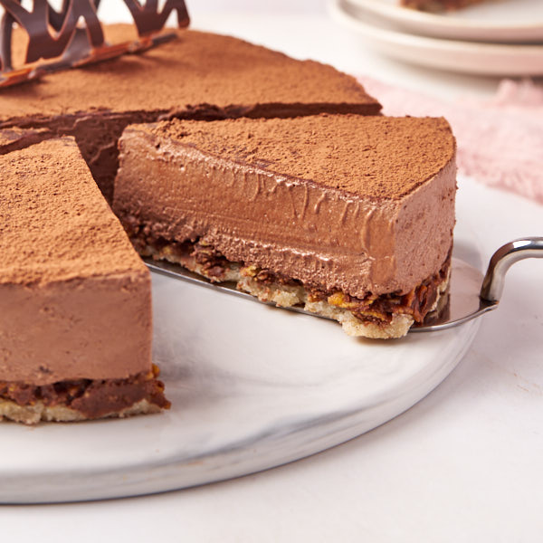

Trianon

Description
Le royal, ou trianon, est un gâteau au chocolat constitué d'une dacquoise, d'un croustillant praliné étalé en fine couche tassée et d'une ganache au chocolat montée que l'on fait bien refroidir au frais.
On saupoudre l'ensemble de cacao en poudre.
Ingrédients pour 6 personnes
Biscuit amande
- 3 Blancs d'oeufs
- 100 g de sucre
- 20 g de Farine ou Maïzéna
- 60 g de Poudre d'amande
Croustillant praliné
- 20 crêpes dentelles
- 150 de pralinoise ou chocolat praliné
Mousse au chocolat
- 200 g de chocolat noir ou au lait
- 3 jaunes d'oeuf
- 75 g de sucre
- 30 cl de crème liquide entière (30% de mat. grasse)
Préparation
- Réaliser le biscuit amande: Séparer les blancs des jaunes, réserver les 3 jaunes pour après.
- Fouetter les blancs en neige, lorsqu'ils commencent à être mousseux, ajouter la moitié du sucre en filet, continuer à battre. Ajouter lorsqu'ils sont fermes, le reste du sucre, et finir de battre 30 secondes, ils doivent être lisses et brillants.
- Dans un bol, Mettre la farine et la poudre d'amande (tamisées idéalement), ajouter les blancs progressivement, en soulevant la pâte, qui doit conserver un maximum de bulles d'air.
- Etaler sur une plaque (perforée de préférence) recouverte de papier cuisson, sur une épaisseur égale et en un diamètre légèrement supérieur au cercle, et enfourner 10 min à 200°C.
- Réaliser le croustillant au praliné: Faire fondre la pralinoise (au bain marie ou micro-ondes), mélanger la dans un bol avec les crêpes dentelles écrasées.
- Dans un cercle à pâtisserie (ou moule à gâteau à charnière), découpez un cercle de biscuit et placez le au fond. Répartir le mélange pralinoise sur le biscuit, lisser la surface et mettre au frigo pour que cela durcisse.
- Réaliser la mousse au chocolat: Dans une petite casserole, faire un sirop avec le sucre et 2 cuillères à soupe d'eau, porter à ébullition sur feu moyen, sans mélanger. Une fois que çà bouillonne fort, mélanger jusqu'à ce que le sirop épaississe (1 minute).
- Dans un cul de poule, fouetter avec un batteur électrique les jaunes d'oeuf en versant le sirop en filet jusqu'à ce que le mélange refroidisse (soit pendant 4 minutes). Le mélange doit bien blanchir.
- Faire fondre le chocolat (micro-ondes ou bain marie) et l'ajouter aux jaunes d'oeuf. Battre toujours avec le batteur électrique: le mélange durcit et c'est normal.
- Fouettez la crème liquide en chantilly bien ferme(il faut que le bol et le fouet du batteur soient bien froids).
- Ajouter au mélange chocolaté 2 grosses cuillères de chantilly. Fouetter avec le batteur électrique, rapidement afin de détendre la préparation, jusqu'à obtenir un mélange lisse (au début çà fait des petits morceaux mais à force de battre le mélange deviendra homogène et lisse).
- Finir de mélanger délicatement a la maryse cette préparation avec le reste de la chantilly.
- Verser la mousse par desuus le croquant, lisser la surface puis faire prendre la mousse au frais(4h).
- Saupoudrer le dessus de cacao amer avec un tamis, démouler et mettre sur le plat de service.
Home